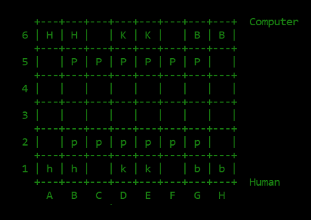
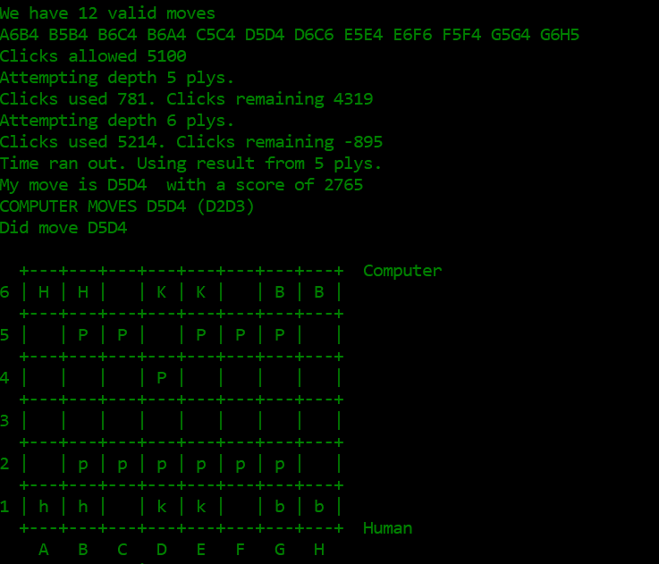
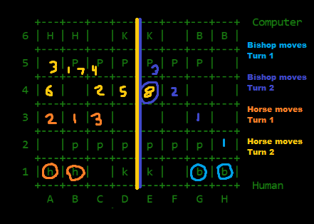
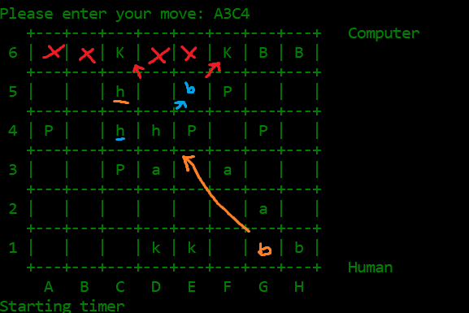
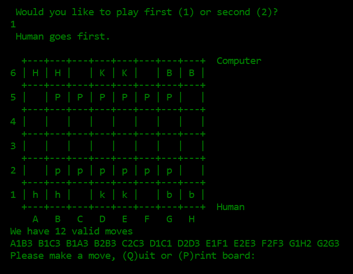
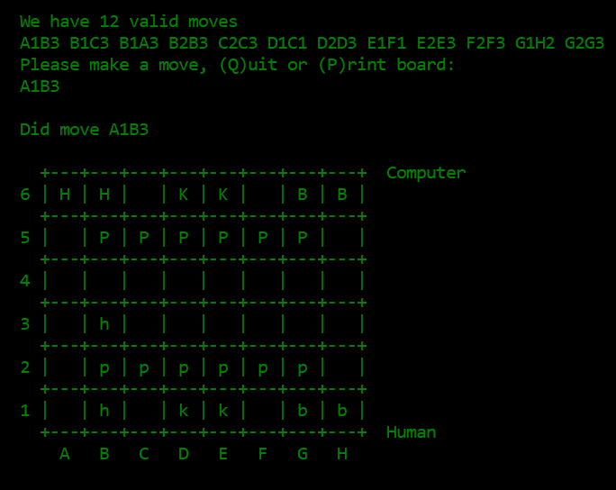

My senior project, Statistics Analysis Visualizations for Introductory Statistics (SAVIS), is a website/standalone program to assist teachers in teaching statistics.
My teammates and I worked with CSUS statistics professor Rafael Diaz to create the software and translate it into Spanish so it can be used to teach hypothesis testing strategies to students in Mexico.
If you would like to try out our senior project, a link to the project and its downloadable versions can be found on Professor Diaz’ website.
Statistical
Analysis
Visualizations
Introductory
Statistics
In a problem to determine if a coin is fair, this feature offers a simulation of head outcomes based on Head Probability and the Number of Tosses performed. The theory is most people consider a coin “fair” if there is an equal chance a coin will be heads or tails. To mimic this, the program sets the default head probability to 0.5 and enables the user to then tip the balance. Additionally, the user can determine the number of tosses they wish to calculate. These tools together gives the user the adjustments needed to make a sample and generate its results.
To perform a test of given probability and number of tosses, the user may add a sample and the results of that sample are displayed onto the graph. A Binomial distribution is also displayed, obtained from gathering the head probability, # of tosses, and the sample size. The more samples a user adds, the closer the sample generated graph will match with the binomial distribution graph. Additionally, the mean and standard distribution of the sample’s results are generated.
Once a sample graph is generated, the percentage of the amount of samples within range can be found using the min heads and max heads sliders.
Like the color key shows, red is the number of heads in 5 tosses per sample, blue is the binomial distribution, and green is the selected interval for the above function. The proportion stated above corresponds to the selected area, which can be adjusted to fit specified dimensions of the graph. The binomial distribution showcases where the red graph will eventually reach if given enough samples.
The function “Two Proportions” looks for the difference in proportions between two populations. This can be useful for establishing a confidence interval. his test is useful when you want to determine if two similar groups (e.g males and females) differ significantly on a single characteristic. To enter data, we put two numbers in each column, or press the arrows on the right side of each box when hovered over to tick the numbers up or down. One for successes and the other for failures for Group A. We then input two more numbers into Group B. Once numbers are typed in the text field, the user should press the “Load Data” button.
Like the color key shows, green is successes and red represents failures and the other half of the proportion. If the user hovers over each section of either the red or green bar, then we can see a tooltip that shows the exact proportion of either successes or failures in Group A or B in percentages.
Utilizing the input from the Enter Data section, Run Simulation allows the user to be able to enter in a number of samples of that entered data to simulate. It will also recalculate the the difference in proportions of each sample group. The results will then be displayed in the adjacent graph.
After running the simulations, the proportions are then re-calculated and displayed on the right side. Furthermore, on the left and right side, text is displayed showing the successes and failures.
Based on the data ran above, the user is given the ability to perform three different color coded tail tests. These include left and right tail, as well as two tail testing. The user selects an extreme value for the selected test to be performed. Additionally the mean of the sample differences, the standard deviation, total generated samples, the number selected in the tail case, and the proportion selected will be displayed. Based on the requirements of the test, dots on the graph will be color coded either red or green. Depending on which tail test is used, the amount selected and the proportion selected will change. Displayed below is the left,right and two tailed tests, respectively.
To enter data, a user may either type their data directly into the highlighted box or drag and drop a .csv file into the box. If the user does not have any data to use, they may use the drop down menu to select two sample data files. Once the data has been entered, the page will display the data in the gray box and the mean of the data below. The graph will populate with the x-axis as the value and the y-axis as the number of times that value shows up. The graph will automatically shift the bounds to the minimum and maximum value of the data.
In the Generate Hypothetical Population section, the user will be able to generate a hypothetical population, based on the given data, to then later be drawn from the Draw Sample section. The user will be able to shift the mean along the interval [-10, 10] and increase the amount of data generated by a flat multiple, from 0 to 50. The gray box will display what the new data looks like, as well as the new mean. The graph in box two will change based on the new inputs.
In the Draw Sample section, the user will be able to draw a sample data set from the amplified hypothetical population previously generated. The user can pick how many data points to randomly sample by changing the sample size. If the sample size is larger then the size of the actual data then the simulation will not run. The user can also pick how many times the program will draw from the population by changing the number in the box labeled # of Samples. Once both boxes have been set, the user can click the run simulation button and a new sample will be generated. The gray box will show what values were drawn, their ID, and the mean of the sample. The graph to the right will also plot out the values drawn from the population.
In the fourth part of the page, the means generated in the Draw Sample box will be used to create the sample distribution of means. Everytime the run simulation box is clicked and a new mean generated, it will be placed in the gray box and plotted on the graph. The first drop down menu will allow the user to select how the graph will look; the dots will change color based on which tail is selected. The dots that turn red will depend on the number in the box below.
There are two easy ways to enter data for the difference of two means test. You can directly type your data into the text area, or you can drag and drop a .csv file into the text area. Once you have some data entered you will need to click the “Load Data” button. Once you do this, you will see the means of the two groups, as well as the difference of those means, displayed next to their respective label. To help you visualize the data that was entered, a dot plot is generated. he top dot plot represents the data from group one while, the dot plot below represents the data from group two.
While it’s good to be able to have a simple representation of the data for our two groups, we can also run simulations on the data we enter. To run a simulation you can simply click the “Run Simulation” button, and a single simulation will be run. But, to save time, you can also type a higher number into the field, and it will run multiple simulations at the same time. When we run a simulation, or a set of simulations, we are taking all of the members of the two populations, and randomizing where they are in the data set. This can be observed on the two dot plots next to the Run Simulations area of the screen. You will see on the two dot plots, that the members from group one (the orange dots) and the members from group two (the purple dots) share space in the dot plot areas, unlike the top two dot plots where we see the two groups segregated.
This provided example is what we expect to see when no data has been loaded, and no simulations have been run. After data has been run, next to “Original Dataset Difference of Means” we will see the difference of the two means displayed on the adjacent graph. Based on the data ran above, the user is given the ability to perform three different color coded tail tests. These include left and right tail, as well as two tail testing.The user selects an extreme value for the selected test to be performed. Additionally the mean of the sample differences, the standard deviation, total generated samples, the number selected in the tail case, and the proportion selected will be displayed. Based on the requirements of the test, dots on the graph will be color coded either red or green.
A C++ MinMax AI that can play special rule set of chess for a class AI tornument. My program utilized the Min Max algorithm in addition to iterative deepening, alpha beta pruning, and a "Conserve Moves" heristic.
If you would like to play against Cooper, you can download "Cooper" here. It will come in the form of a Windows executable which you may prefer run from a command window since the app closes at the end of the game.
During the time of taking our college's artificial intelligence class; the second class project gave us a month to develop an adversarial search AI to play a specific game and then compete with classmates in an AI competition after the submission date. The results of this competition did not affect our grades and mostly was for point of pride and showcase of mastery of the subject. The way that semester panned out, there was three weeks during the semester; where our professor went over the general theory, and then one week during the spring break to develop and finish the project. We were allowed to develop our adversarial search in whichever coding language we wanted, as long as it implemented the Min Max algorithm and at least attempted to develop additional optimizations. When I submitted my project for the competition I dubbed it under the name Cooper.
General Layout of the board. K,B,H,P are the computer's Kings, Bishops, Horses, and Pawns (moving DOWN the board). k,b,h,p are the human's Kings, Bishops, Horses, and Pawns (moving UP the board).
Since our school primarily taught Java and some aspects of Python, most of the class decided to go down those paths to develop the project. Given knowledge on the subject, however it appeared to me that to more effectively utilize the Min Max algorithm you needed to minimize the overhead the chosen language had over the program, otherwise it would get bogged down. To counter that, I decided to pick up C++ to minimize the need for objects and more effectively manage memory, so that the MixMax algorithm could reach deeper plys and thus more effectively plan it’s moves out. Being that it was my first time designing in C++, it proved to be a challenge that required that full extent of those four weeks. This included coming to campus during the entirety of spring break to iron out its design.
The contributing factors to the program's success was the optimizations I implemented to to improve its performance in pruning depth branches, and the development of a competitive heuristic for the game.
During class sessions we discussed the concept of iterative deepening which enabled the MinMax program to utilize a global best score as a comparison tool to determine the program should go to a deeper depth for a better score. Implementing iterative deepening to Cooper enabled it to use the global best score to reach deeper plys because it overall minimized the amount of nodes on the branches it had to check.
Above is a demonstration of how iterative deepening works with Cooper. Integrated with a timer, up to a time limit Cooper can continue to look at deeper plys. As we get deeper into the game, moves are decided quicker which means deeper plys can be reached. If this feature was not included in Cooper, they would be stuck with whichever max ply depeth I set, potientially handicapping its effectiveness in the late game.
Another method of pruning we learned about was alpha beta pruning, meant to work alongside the Min Max algorithm, it provides the adversarial search with the ability to ignore branches (which would be up to millions of nodes) that provide a worst score than previously evaluated nodes on that branch. For Cooper, this meant it would be able utilize a local best score as a comparison tool for detecting and avoiding dead end paths, further minimizing the amount of nodes it had to check.
The final contributing factor to Cooper's success was its heuristic during the competition. To develop this we needed an in depth understanding of how Congress Chess was played.
One of the first things I noticed while playing was the dominating effect the politicalican units had on the game, because their flexibility to be used as a horse or a bishop in the right circumstances provide a lot of utility no other unit possessed. To capitalize on this, I developed a heuristic with the strategy that provided higher score returns to Cooper for moves that preserved the political units while eliminating the opponent's.
Above is a demonstration of how many moves horses and bishops in this game could make in the first two turns of play.
Another thing I noticed when competing against other classmates was an aggressive design in their adversarial searches, looking to close out the games quickly by rushing to capture the kings or put them in deadlock positions. To counter this, I decided to add score to moves that conserved my pieces in general as well as conserved moves. These were both lesser values than the ones I put for the politicians so their protection was a greater concern to me. As an unintended consequence, Cooper played a conservative long game with its opponents, revealing bugs in my opponent's adversarial searches, bugs that I previously found out and eliminated from the ironing out process. For the games that were not automatically won by opponent disqualification, Cooper set the board up so that it would eliminate the opponent's politicians, block its pawns, and trap their kings. This tactic allowed me to beat AI that had greater depth ply algorithms because while I wasn't searching deeper I was making better moves, and protected my board from being rushed down. Often this would result in my AI forcing the opponent, who had not planned for a control game, to make moves to protect its units that ate at their remaining moves and ability to counter attack.
Above is a demonstration of a move I called the "Triangle Horse Move", which enabled a player to control the movement of the opponent's kings with three horses if not properly countered. Even though I did not implement additional optimizations like Killer Moves, which presaves game winning moves ahead of time, I added this to the heristic, giving the computer a small score bonus if they find a move that can perform this move. A full explanation of the move can be see down below.
Throughout the entire tournament Cooper did not break once, or make illegal moves. Its wins were enabled by the study of programming languages and utilizing that knowledge to implement their strengths further improved by selective optimization and effective use move selection heuristics.
"Congress Chess" is a chess-like game in which each player takes turns moving one of his/her pieces. The board is 8x6, with the left four columns being the "left wing" and the right four columns being the "right wing".
When the game boots up, you are given the choice of whether Cooper or the player will go first.
When the player decides to go first they are provided a list of valid moves they can make and are prompted to make a move. Once a move is made, the game determines if that move either won the game. If not, it passes control over to the next player, in this case Cooper, and checks to see if Cooper is out of moves. If its doesn't, its their turn. On Cooper's turn, it will be provided a list of legal moves, evaluate the boardstate and make its move. This process will repeat until either a player makes a winning move (capturing both of the opponent's kings) or a player runs out of legal moves they can make. Should the player decide Cooper goes first, Cooper will make its move as before, the player is prompted to make a move, and the cycle continues as before.
Cooper has been tuned to be a decent competetor to other adversaral AI, but is definitely beatable by human opponents who observe its patterns.
If you would like to play against Cooper, you can download "Cooper" here. It will come in the form of a Windows executable which you may prefer run from a command window since the app closes at the end of the game.
The player goes first, provided a list of valid moves, and is prompted to make a move.
After the player makes a move the board updates to reflect that move.
The move begins with moving horses into C4 and C5, blocking the moves of a left king until a third horse, previously a bishop, moves to D4. As the keypin of the plan, the D4 horse is able to eliminate the last safe haven for the left king, while also enabling the blockage of E6 for the right king. Finally, When the left king is dealt with, the C4 horse can move to E5, become a bishop, and potientially eliminate the right king if the opponent hasn't moved their bishops yet.
For our Computer Game Architecture class, I was part of a team that was tasked with building upon a game engine in Java in OpenGl and designing a game with it. I participated the inclusion of networked multiplayer, design and animation of external models from scratch in Blender, and the creation of tessilated terrain, while taking full ownership of designing the world and the activities a player can do. Thematically, Mister Worldwide is a 3D space themed adventure game where you play as a sent robot by a human colony to explore a new alien world. There, the players collect the remains of the mysterious society to power an ancient space rocket. They must beware, however, that this ancient planet has ancient protector who does not take kindly to their artifacts being defiled.
A custom Java Game Engine that utlizes the OpenGL render, which includes each of the following features.
External models. The game must include at least two custom-made models designed by you, Each person in the group must contribute at least one of those external models. Blender or Maya are recommended. Note that RAGE supports only “OBJ”. (related) – Each of these two models must utilize a skin (texture) of your own design using UVunwrapping, and the texture must be properly applied in your game.
Networked Multi-player. Your game must be able to be played by multiple players (at least two) over a network. It is a requirement that players be able to see each other’s avatars in their view. Note: it is also a requirement that your game function in single-player mode (see below). (related) - Players must have a way of selecting their character avatar model at startup, and the selection must be conveyed to other game clients so their ghosts use the proper models for each player. This means if you use the simple game network protocol discussed in class, it must be extended to pass a model name as part of the CREATE message sent to remote clients.
Scripting. The way in which you incorporate scripting is up to you; it could be used for configuration/initialization, for dynamic world and/or algorithm modification, or something else. JavaScript is the easiest since it is built in to Java, but you may use Python or Lua if you prefer.
Skybox and Terrain. Your game must include a skybox and terrain. You may use the RAGE Skybox and Terrain classes, or you may develop your own. Note that it is not a requirement that these components be integral to the gameplay. For example, if your game takes place mostly “indoors” then you can meet this requirement by providing a way for a player to “go outside” and move around on (and up and down on) the terrain, bounded by a skybox, which has no direct effect on the game – but the program must at least demonstrate use of a skybox and a terrain.
Lights. You must utilize the RAGE lighting classes somewhere in your game. In particular, you must make effective use of at least two lights (positional, spotlight, or directional) in addition to the general ambient light. At least one must be possible for the player to turn on and off.
3D Sound. Your game must support several 3D action-specific game sounds as well as background sound. It is recommended that you use RAGE’s audio package (which uses JOAL), or you may use JOAL directly, or you may use another 3D sound package if you want.
HUD. Include a HUD component to let the player know what is happening in the game. If your game is better without a HUD, you may include an input to enable/disable the HUD display.
Hierarchical SceneGraph. There must be some portion of your scenegraph that utilizes hierarchical transforms. It could be a hierarchical object, or a hierarchical system of objects (such as a planetary system). You should use RAGE’s scenegraph support for this.
Animation. Add skeletal animation using keyframes for at least one model in your game. It does not have to be complex, but should look reasonably smooth. The animation must be created by you, using Blender. You can then use RAGE’s Blender export tool and import it into your game.
NPCs. Your game must include one or more “Non-Player Characters” managed by at least a rudimentary AI controller. This means the NPCs must do something under AI control, not just stand around frozen, and not just move randomly. We will study various approaches in class.
Physics. Your game must include some use of a physics engine. You may use RAGE’s built-in physics package (it uses JBullet), or you can use a physics package (such as JBullet) directly. You can satisfy this requirement anywhere in your game, for any reasonable purpose.
Breakdown of general concepts after the picture
As part of my system software certificate pursuit, I took a class where the focus was building an operating system using C and Assembly macros. One of our project milestones was to enable our OS to be able, if wired physically or virtually, to perform interprocess communication between several terminals. Working at a low level perspective a lot of common day debugging tools from IDEs were unavailable, requiring the use of the GDB debugging tool to display the call stack, set breakpoints, and print out variables to monitor their accuracy. The end result had several built queues passing messages between eachother, taken in as a string by the user and then processed as a char array by the computer, enqueuing and dequeuing chars one by one.
A multitasking Operating system made with C & ASM macros as well as a custom framework called SPEDE to abstract assembly intensive elements.
The overall layout of the OS involves five major classes, with several prototype classes, and an k-entry.S file to get the whole thing started.
This is a video demonstrating the underlying features of the OS, using I/O ports we are able to read and write messages to terminals within the network.
Breakdown of general concepts after the video
The most common neural network training method. The concept of supervised learning through the use of multiple layers of test checks and corrections.Inputs are adjusted by weights based on their success rate at matching testing data.
Fancy Coded formulas here
An extra node added to each layer that always outputs 1. Enables the adjustment of thresholds (outputs) of a Neural Network hidden nodes.
Testing after training is complete, checking on untrained test cases. If it performs well, then it is said to "generalize".
Training an overly-tight criteria can lead to poor generalization, usually occuring if the training data is noisy.
Ensures the training done is within the specified weight ranges via checking
if the normalized mew is within 0 and 1.
If(mew == 0), normal weight training.
If(mew > 0), portion of previous weight changes is added.
If(mew > 1), weight changes diverge and training fails.
Using the simple classical neural network code provided by your instructor, create a single training file for training a SINGLE neural network to solve a problem that has THREE inputs and TWO outputs:
For this problem, limit the size of the TRAINING set to between 20 and 50 training pairs. You must also create a TESTING data set to see how well your trained network was able to GENERALIZE. You should experiment to find settings that achieve the best results for training and generalization.
Repeat part [1], but with separating the two problems into their own separate neural networks, each with three inputs and ONE output. Use the same training data as for part 1 (although in each case there should only be the ONE output). Compare your results with part [1].
Use TFLearn to solve an image classification problem of your own. You will need to prepare sets of training and testing images. Your training set can be however large you want.
You can use the posted TFLearn code as a starting point. However, you should study and modify the code in order to try a variety of network architectures. When reporting your results, you should use the TensorBoard graphs to precisely illustrate your architecture and the results. Be sure and use the information shown on the ARCS of the TensorBoard architecture graph to verify that your network design is reasonable, and has sufficient information passing from layer-to-layer.
NOTE: There are a number of training sets posted on the web, such as MNIST, CIFAR, etc. For this project, you are expected to instead BUILD YOUR OWN data set that has NOT already been organized for machine learning.